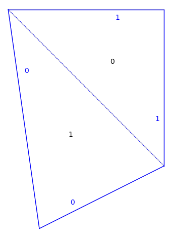

surface#
EXAMPLES:
sage: import flatsurf
sage: flatsurf.translation_surfaces.veech_2n_gon(4).plot()
...Graphics object consisting of 18 graphics primitives
- class flatsurf.graphical.surface.GraphicalSurface(surface, adjacencies=None, polygon_labels=True, edge_labels='gluings', default_position_function=None)[source]#
This class manages the rendering of a SimilaritySurface.
This class essentially consists of a collection of GraphicalPolygons which control how individual polygons are positioned. In addition, this class stores options which are passed to the polygons when they are rendered.
Some setup features set in the constructor and can be set again later via
process_options().The basic tasks of the class are to render the polygons, edges and labels. To customize a rendering, it is useful to know something about how this class works. (Apologies!)
There are attributes which control whether or not certain objects are rendered, namely:
will_plot_polygons– Whether to plot polygons which are right-side up.will_plot_upside_down_polygons– Whether to plot polygons which areupside down. Defaults to False.
will_plot_polygon_labels– Whether to plot polygon labels.will_plot_edges– If this is False then no edges will be plotted.will_plot_non_adjacent_edges= Whether to plot polygon edges which arenot adjacent to the edge it is glued to.
will_plot_adjacent_edges– Whether to plot polygon edges which areadjacent to the polygon they are glued to.
will_plot_self_glued_edges– Whether to plot polygon edges which areglued to themselves.
will_plot_edge_labels– Whether to plot polygon edges labels.will_plot_zero_flags– Whether to plot line segments from thebaricenter to the zero vertex of each polygon. Useful in working out vertex and edge labels. Defaults to False.
The
plot()method calls some other built in methods:plot_polygon(),plot_polygon_label(),plot_edge()andplot_edge_label(). These in turn call methods inGraphicalPolygon.polygon_options– Options passed topolygon.GraphicalPolygon.plot_polygon()whenplotting a polygon right-side up.
upside_down_polygon_options– Options passed topolygon.GraphicalPolygon.plot_polygon()when plotting a polygon upside-down.
polygon_label_options– Options passed topolygon.GraphicalPolygon.plot_label()when plotting a polygon label.
non_adjacent_edge_options– Options passed topolygon.GraphicalPolygon.plot_edge()when plotting a polygon edge which is not adjacent to the edge it is glued to.
adjacent_edge_options– Options passed topolygon.GraphicalPolygon.plot_edge()when plotting a polygon edge which is adjacent to the edge it is glued to.
self_glued_edge_options– Options passed topolygon.GraphicalPolygon.plot_edge()when plotting a polygon edge which is glued to itself.
edge_label_options– Options passed topolygon.GraphicalPolygon.plot_edge_label()when plotting a edge label.
zero_flag_options– Options passed topolygon.GraphicalPolygon.plot_zero_flag()when plotting a zero_flag.
INPUT:
similarity_surface– a similarity surfacepolygon_labels– a boolean (defaultTrue) whether the label of polygons are displayededge_labels– option to control the display of edge labels. It can be one ofFalseorNonefor no labels'gluings'– to put on each side of each non-adjacent edge, the name of the polygon to which it is glued'number'– to put on each side of each edge the number of the edge'gluings and number'– full information'letter'– add matching letters to glued edges in an arbitrary way
adjacencies– a list of pairs(p,e)to be used to set adjacencies of polygons.default_position_function– a function mapping polygon labels to similarities describing the position of the corresponding polygon.
If adjacencies is not defined and the surface is finite, make_all_visible() is called to make all polygons visible.
EXAMPLES:
sage: from flatsurf import similarity_surfaces sage: from flatsurf.graphical.surface import GraphicalSurface sage: s = similarity_surfaces.example() sage: gs = GraphicalSurface(s) sage: gs.polygon_options["color"]="red" sage: gs.plot() ...Graphics object consisting of 13 graphics primitives
- adjacent_edge_options#
Options passed to
polygon.GraphicalPolygon.plot_edge()when plotting a polygon edge which is adjacent to the edge it is glued to.
- bounding_box()[source]#
Return the quadruple (x1,y1,x2,y2) where x1 and y1 are the minimal x- and y-coordinates of a visible graphical polygon and x2 and y2 are the maximal x-and y- coordinates of a visible graphical polygon.
- copy()[source]#
Make a copy of this GraphicalSurface.
EXAMPLES:
sage: from flatsurf import translation_surfaces sage: s = translation_surfaces.octagon_and_squares() sage: gs = s.graphical_surface() sage: gs.will_plot_zero_flags = True sage: gs.graphical_polygon(1).transformation() (x, y) |-> (x + 2, y) sage: gs.make_adjacent(0,2) sage: gs.graphical_polygon(1).transformation() (x, y) |-> (x + (a + 4), y + (a + 2)) sage: gs.polygon_options["color"]="yellow" sage: gs2 = gs.copy() sage: gs2 == gs False sage: gs2.will_plot_zero_flags True sage: gs2.graphical_polygon(1).transformation() (x, y) |-> (x + (a + 4), y + (a + 2)) sage: gs2.polygon_options {'color': 'yellow'}
- edge_label_options#
Options passed to
polygon.GraphicalPolygon.plot_edge_label()when plotting a polygon label.
- edge_labels(lab)[source]#
Return the list of edge labels to be used for the polygon with label
lab.EXAMPLES:
sage: from flatsurf import similarity_surfaces sage: s = similarity_surfaces.example() sage: g = s.graphical_surface(adjacencies=[]) sage: g.edge_labels(0) ['1', '1', '1'] sage: g.make_all_visible(adjacent=True) sage: g.edge_labels(0) [None, '1', '1'] sage: g.make_adjacent(0,0) sage: g.edge_labels(0) [None, '1', '1'] sage: g.edge_labels(1) ['0', None, '0'] sage: s = similarity_surfaces.example() sage: g = s.graphical_surface(adjacencies=[], edge_labels='number') sage: g.edge_labels(0) ['0', '1', '2'] sage: g = s.graphical_surface(adjacencies=[], edge_labels='gluings and number') sage: g.edge_labels(0) ['0 -> (1, 1)', '1 -> (1, 2)', '2 -> (1, 0)'] sage: g.make_all_visible(adjacent=True) sage: g.edge_labels(0) ['0', '1 -> (1, 2)', '2 -> (1, 0)']
- is_adjacent(p, e)[source]#
Returns the truth value of the statement ‘The polygon opposite edge (p,e) is adjacent to that edge.’
EXAMPLES:
sage: from flatsurf import similarity_surfaces sage: s = similarity_surfaces.example() sage: g = s.graphical_surface(adjacencies=[]) sage: g.is_adjacent(0,0) False sage: g.is_adjacent(0,1) False sage: g.make_all_visible(adjacent=True) sage: g.is_adjacent(0,0) True sage: g.is_adjacent(0,1) False
- make_adjacent(p, e, reverse=False, visible=True)[source]#
Move the polygon across the prescribed edge so that is adjacent. The polygon moved is obtained from opposite_edge(p,e).
If reverse=True then the polygon is moved so that there is a fold at the edge.
If visible is True (by default), we also make the moved polygon visible.
EXAMPLES:
sage: from flatsurf import similarity_surfaces sage: s = similarity_surfaces.example() sage: gs = s.graphical_surface(adjacencies=[]) sage: gs.graphical_polygon(0) GraphicalPolygon with vertices [(0.0, 0.0), (2.0, -2.0), (2.0, 0.0)] sage: gs.graphical_polygon(1) GraphicalPolygon with vertices [(0.0, 0.0), (2.0, 0.0), (1.0, 3.0)] sage: print("Polygon 0, edge 0 is opposite "+str(gs.opposite_edge(0,0))) Polygon 0, edge 0 is opposite (1, 1) sage: gs.make_adjacent(0,0) sage: gs.graphical_polygon(0) GraphicalPolygon with vertices [(0.0, 0.0), (2.0, -2.0), (2.0, 0.0)] sage: gs.graphical_polygon(1) GraphicalPolygon with vertices [(0.4, -2.8), (2.0, -2.0), (0.0, 0.0)]
- make_all_visible(adjacent=None, limit=None)[source]#
Attempt to show all invisible polygons by walking over the surface.
INPUT:
adjacent– (defaultNone) whether the newly added polygon are set to be adjacent or not. Defaults to true unless a default_position_function was provided.limit– (defaultNone) maximal number of additional polygons to make visible
EXAMPLES:
sage: from flatsurf import similarity_surfaces sage: s = similarity_surfaces.example() sage: g = s.graphical_surface() sage: g.make_all_visible() sage: g.plot() ...Graphics object consisting of 13 graphics primitives
sage: s = similarity_surfaces.example() sage: g = s.graphical_surface(adjacencies=[]) sage: g.make_all_visible(adjacent=False) sage: g.plot() ...Graphics object consisting of 16 graphics primitives
- non_adjacent_edge_options#
Options passed to
polygon.GraphicalPolygon.plot_edge()when plotting a polygon edge which is not adjacent to the edge it is glued to.
- opposite_edge(p, e)[source]#
Given the label
pof a polygon and an edgeein that polygon returns the pair (pp,ee) to which this edge is glued.
- plot(**kwargs)[source]#
Return a plot of this surface.
INPUT:
kwargs– arguments are normally forwarded to the polygon plotting. However, prefixed arguments, e.g.,polygon_label_color, are routed correspondingly. Also, a dictionary suffixed with_optionsis merged with the existing options of this surface. See examples below for details.
EXAMPLES:
sage: from flatsurf import similarity_surfaces sage: s = similarity_surfaces.example() sage: from flatsurf.graphical.surface import GraphicalSurface sage: gs = GraphicalSurface(s) sage: gs.plot() ...Graphics object consisting of 13 graphics primitives

Keyword arguments that end in
_optionsare merged into the corresponding attribute before plotting; seeGraphicalSurfacefor a list of all supported_options:sage: gs.plot(polygon_label_options={"color": "red"}) ...Graphics object consisting of 13 graphics primitives

Keyword arguments that are prefixed with such an aspect of plotting, are also merged into the corresponding attribute before plotting; see
GraphicalSurfacefor a list of all supported prefixes, i.e.,_options:sage: gs.plot(polygon_label_color="red") ...Graphics object consisting of 13 graphics primitives
All other arguments are passed to the polygon plotting itself:
sage: gs.plot(fill=None) ...Graphics object consisting of 13 graphics primitives

- plot_edge(label, edge, graphical_polygon, is_adjacent, is_self_glued)[source]#
Internal method for plotting a polygon’s edge returning a Graphics2D.
The method calls
polygon.GraphicalPolygon.plot_edge(). Depending on the geometry of the edge pair, it passes one of the attributesadjacent_edge_options,self_glued_edge_optionsornon_adjacent_edge_options.Override this method for fine control of how the edge is drawn.
INPUT:
label– The label of the polygon.edge– Integer representing the edge of the polygon.graphical_polygon– The associated graphical polygon.is_adjacent– True if and only if the polygon opposite this edge is visible and adjacent to this edge.In this case, plot_edge is called only once for this edge.
is_self_glued– True if and only if the edge is glued to itself by a 180 degree rotation.This is never True if is_adjacent is True.
- plot_edge_label(p, e, edge_label, graphical_polygon)[source]#
Internal method for plotting an edge label. Calls
polygon.GraphicalPolygon.plot_edge_label()passing the attributeedge_label_options.Override this method for fine control of how the edge is drawn.
INPUT:
p– The label of the polygon.e– Integer representing the edge of the polygon.edge_label– A string containing the label to be printed on the edge.graphical_polygon– The associated graphical polygon.
- plot_polygon(label, graphical_polygon, upside_down)[source]#
Internal method for plotting polygons returning a Graphics object.
Calls
polygon.GraphicalPolygon.plot_polygon()passing the attributeupside_down_polygon_optionsif the polygon is upside down andpolygon_optionsotherwise.Override this method for fine control of how the polygons are drawn.
INPUT:
label– The label of the polygon being plotted.graphical_polygon– The associated graphical polygon.upside_down– True if and only if the polygon will be rendered upside down.
- plot_polygon_label(label, graphical_polygon, upside_down)[source]#
Internal method for plotting polygon labels returning a Graphics2D.
Calls
polygon.GraphicalPolygon.plot_label()passing the attributepolygon_label_options.Override this method for fine control of how the polygons are drawn.
INPUT:
label– The label of the polygon being plotted.graphical_polygon– The associated graphical polygon.upside_down– True if and only if the polygon will be rendered upside down.
- plot_zero_flag(label, graphical_polygon)[source]#
Internal method for plotting a polygon’s zero_flag and returning a Graphics2D. Simply calls
polygon.GraphicalPolygon.plot_zero_flag()passing the attribute` zero_flag_options`.Override this method for fine control of how the edge is drawn.
INPUT:
label– The label of the polygon.graphical_polygon– The associated graphical polygon.
- polygon_label_options#
Options passed to
polygon.GraphicalPolygon.plot_label()when plotting a polygon label.
- polygon_options#
Options passed to
polygon.GraphicalPolygon.plot_polygon()when plotting a polygon right-side up.
- process_options(adjacencies=None, polygon_labels=None, edge_labels=None, default_position_function=None)[source]#
Process the options listed as if the graphical_surface was first created.
INPUT:
Consult
GraphicalSurfacefor the possible arguments.
- reset_letters(p, e)[source]#
Resets the letter dictionary for storing letters used in edge labeling if edge_labels=”letter” is used.
- self_glued_edge_options#
Options passed to
polygon.GraphicalPolygon.plot_edge()when plotting a polygon edge which is glued to itself.
- to_surface(point, v=None, label=None, ring=None, return_all=False, singularity_limit=None, search_all=False, search_limit=None)[source]#
Converts from graphical coordinates to similarity surface coordinates.
A point always must be provided. If a vector v is provided then a SimilaritySurfaceTangentVector will be returned. If v is not provided, then a SurfacePoint is returned.
INPUT:
point– Coordinates of a point in graphical coordinates to beconverted to surface coordinates.
v– (defaultNone) If provided a tangent vector in graphicalcoordinates based at the provided point.
label– (defaultNone) If provided, then we only convertpoints and tangent vectors in the corresponding graphical polygon.
ring– (defaultNone) If provided, then objects returnedwill be defined over the given ring, otherwise we use the base_ring of the surface.
return_all– (defaultFalse) By default we return the firstpoint or vector we find. However if the graphical polygons overlap, then a point or vector might correspond to more than one point or vector on the surface. If
return_allis set toTruethen we return a set of all points we find instead.
singularity_limit– (defaultNone) This only has an effectif returning a singular point (i.e.,
visNone) and the surface is infinite. In this case, the singularity should be returned but it could be infinite. Then singularity_limit controls how far we look for the singularity to close. This value is passed to thepoint()method on the surface.
search_all– (defaultFalse) By default we look just inpolygons with visible label. If set to
True, then we instead look in all labels.
search_limit– (defaultNone) Ifsearch_allisTrue,then we look at the first
search_limitpolygons instead of all polygons. This must be set to an positive integer ifsearch_allis and the surface is infinite.
EXAMPLES:
sage: from flatsurf import similarity_surfaces sage: s = similarity_surfaces.example() sage: gs = s.graphical_surface() sage: gs.to_surface((1,-2)) Point (1, 1/2) of polygon 1 sage: gs.to_surface((1,-2), v=(1,0)) SimilaritySurfaceTangentVector in polygon 1 based at (1, 1/2) with vector (1, -1/2) sage: from flatsurf import translation_surfaces sage: s = translation_surfaces.infinite_staircase() sage: gs = s.graphical_surface() sage: gs.to_surface((4,4), (1,1), search_all=True, search_limit=20) SimilaritySurfaceTangentVector in polygon 8 based at (0, 0) with vector (1, 1) sage: s = translation_surfaces.square_torus() sage: pc = s.minimal_cover(cover_type="planar") sage: gs = pc.graphical_surface() sage: gs.to_surface((3,2), search_all=True, search_limit=20) Vertex 0 of polygon (0, (x, y) |-> (x + 3, y + 2)) sage: p = gs.to_surface((sqrt(3),sqrt(2)), ring=AA, search_all=True, search_limit=20) doctest:warning ... UserWarning: the ring parameter is deprecated and will be removed in a future version of sage-flatsurf; define the surface over a larger ring instead so that this points' coordinates live in the base ring sage: next(iter(p.coordinates(next(iter(p.labels()))))).parent() Vector space of dimension 2 over Algebraic Real Field sage: v = gs.to_surface((3/2,3/2),(sqrt(3),sqrt(2)),ring=AA,search_all=True, search_limit=20) sage: v.bundle() Tangent bundle of Minimal Planar Cover of Translation Surface in H_1(0) built from a square defined over Algebraic Real Field
- upside_down_polygon_options#
Options passed to
polygon.GraphicalPolygon.plot_polygon()when plotting a polygon upside-down.
- will_plot_adjacent_edges#
Whether to plot polygon edges which are adjacent to the polygon they are glued to.
- will_plot_edge_labels#
Whether to plot polygon edges which are not adjacent to the polygon they are glued to.
- will_plot_edges#
If this is False then no edges will be plotted.
- will_plot_non_adjacent_edges#
Whether to plot polygon edges which are not adjacent to the edge it is glued to.
- will_plot_polygon_labels#
Whether to plot polygon labels.
- will_plot_polygons#
Whether to plot polygons which are right-side up.
- will_plot_self_glued_edges#
Whether to plot polygon edges which are glued to themselves.
- will_plot_upside_down_polygons#
Whether to plot polygons which are upside down
- will_plot_zero_flags#
Whether to plot line segments from the baricenter to the zero vertex of each polygon.
- zero_flag_options#
Options passed to
polygon.GraphicalPolygon.plot_zero_flag()when plotting a zero_flag.